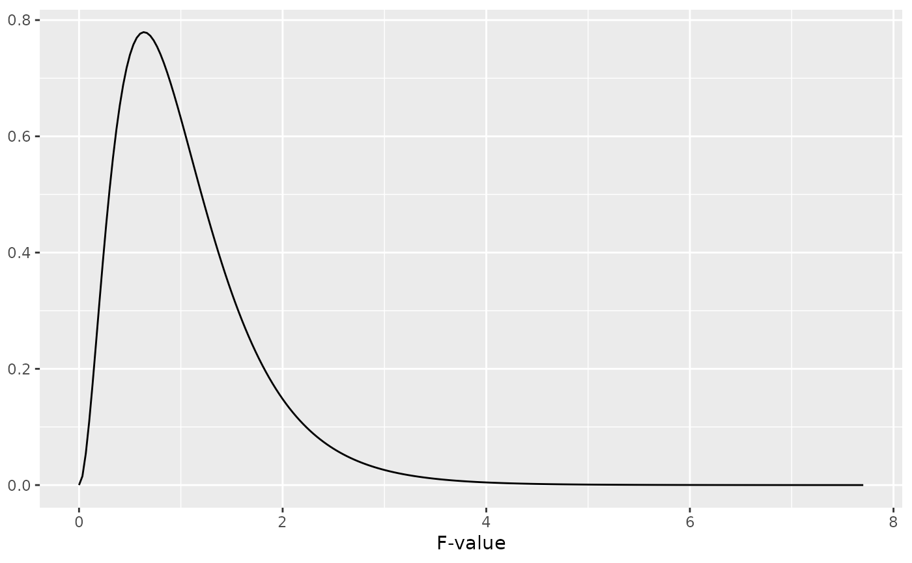
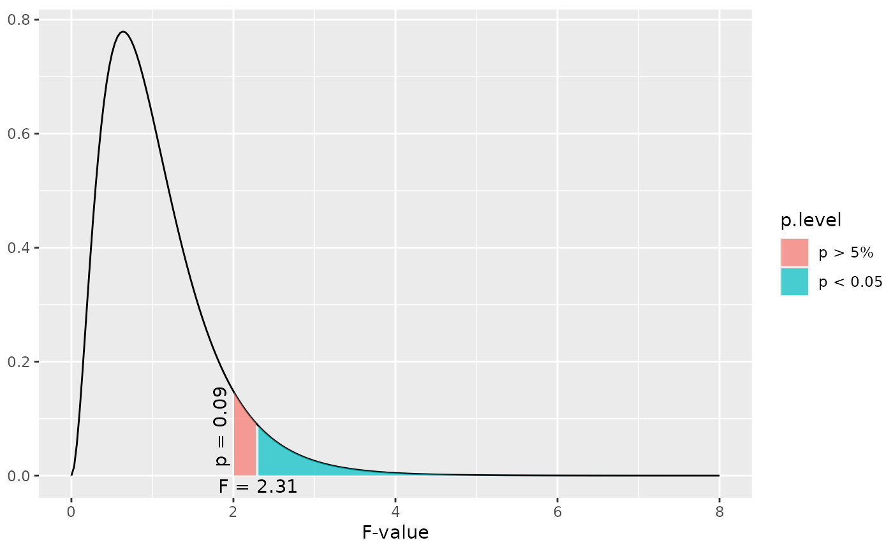

This function plots a simple F distribution or an F distribution with shaded areas that indicate at which F value a significant p-level is reached.
dist_f(
f = NULL,
deg.f1 = NULL,
deg.f2 = NULL,
p = NULL,
xmax = NULL,
geom.colors = NULL,
geom.alpha = 0.7
)Arguments
- f
Numeric, optional. If specified, an F distribution with
deg.f1anddeg.f2degrees of freedom is plotted and a shaded area atfvalue position is plotted that indicates whether or not the specified value is significant or not. If bothfandpare not specified, a distribution without shaded area is plotted.- deg.f1
Numeric. The first degrees of freedom for the F distribution. Needs to be specified.
- deg.f2
Numeric. The second degrees of freedom for the F distribution. Needs to be specified.
- p
Numeric, optional. If specified, a F distribution with
deg.f1anddeg.f2degrees of freedom is plotted and a shaded area at the position where the specified p-level starts is plotted. If bothfandpare not specified, a distribution without shaded area is plotted.- xmax
Numeric, optional. Specifies the maximum x-axis-value. If not specified, the x-axis ranges to a value where a p-level of 0.00001 is reached.
- geom.colors
user defined color for geoms. See 'Details' in
plot_grpfrq.- geom.alpha
Specifies the alpha-level of the shaded area. Default is 0.7, range between 0 to 1.
Examples
# a simple F distribution for 6 and 45 degrees of freedom
dist_f(deg.f1 = 6, deg.f2 = 45)

# F distribution for 6 and 45 degrees of freedom,
# and a shaded area starting at F value of two.
# F-values equal or greater than 2.31 are "significant"
dist_f(f = 2, deg.f1 = 6, deg.f2 = 45)

# F distribution for 6 and 45 degrees of freedom,
# and a shaded area starting at a p-level of 0.2
# (F-Value about 1.5).
dist_f(p = 0.2, deg.f1 = 6, deg.f2 = 45)